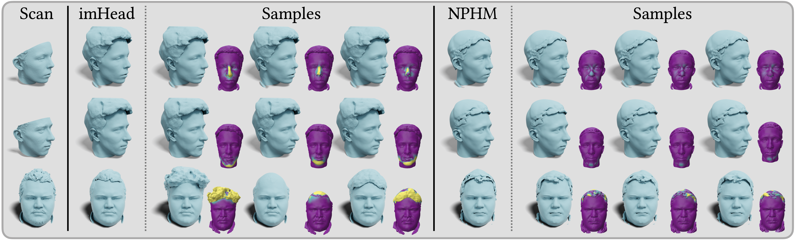

Results
Reconstruction Performance

Localized Editing
A practical property of the proposed method is its ability to seamlessly edit and swap facial regions and components between different identities.

Over the last years, 3D morphable models (3DMMs) have emerged as a state-of-the-art methodology for modeling and generating expressive 3D avatars. However, given their reliance on a strict topology, along with their linear nature, they struggle to represent complex full-head shapes. Following the advent of deep implicit functions, we propose imHead, a novel implicit 3DMM that not only models expressive 3D head avatars but also facilitates localized editing of the facial features. Previous methods directly divided the latent space into local components accompanied by an identity encoding to capture the global shape variations, leading to expensive latent sizes. In contrast, we retain a single compact identity space and introduce an intermediate region-specific latent representation to enable local edits. To train imHead, we curate a large-scale dataset of 4K distinct identities, making a step-towards large scale 3D head modeling. Under a series of experiments we demonstrate the expressive power of the proposed model to represent diverse identities and expressions outperforming previous approaches. Additionally, the proposed approach provides an interpretable solution for 3D face manipulation, allowing the user to make localized edits.
In this work, we introduce imHead, the first large-scale implicit model of the human head, that supports localized face editing, advancing the field of high-fidelity 3D head modeling.
To do so, we curate a large scale dataset that is 10x- bigger than previous full head datasets. We highlight the limitations of previous methods in capturing both global and local fields in a stratified manner and propose an effective strategy that enables both compact latent space and localized editing properties.
A practical property of the proposed method is its ability to seamlessly edit and swap facial regions and components between different identities.
@article{potamias2025imhead,
title={ImHead: A Large-scale Implicit Morphable Model for Localized Head Modeling},
author={Rolandos Alexandros Potamias and Stathis Galanakis and Jiankang Deng and Athanasios Papaioannou and Stefanos Zafeiriou},
year={2025},
eprint={2510.10793},
archivePrefix={arXiv},
primaryClass={cs.CV}
}